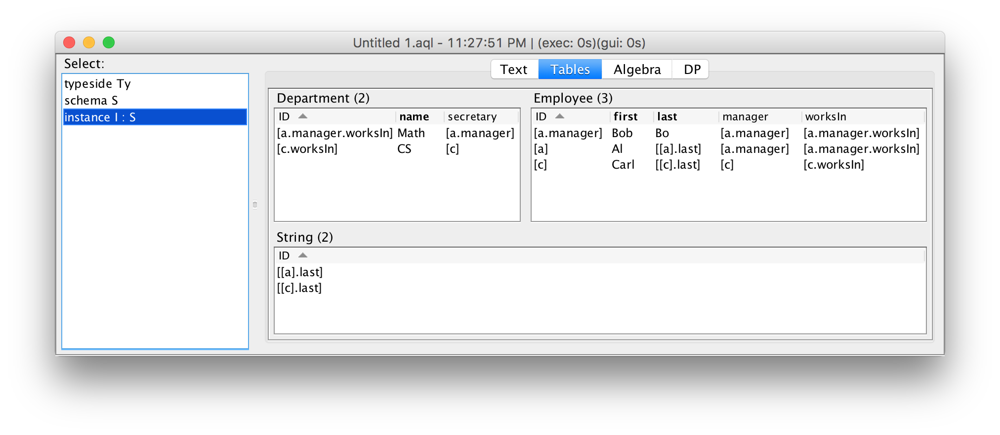
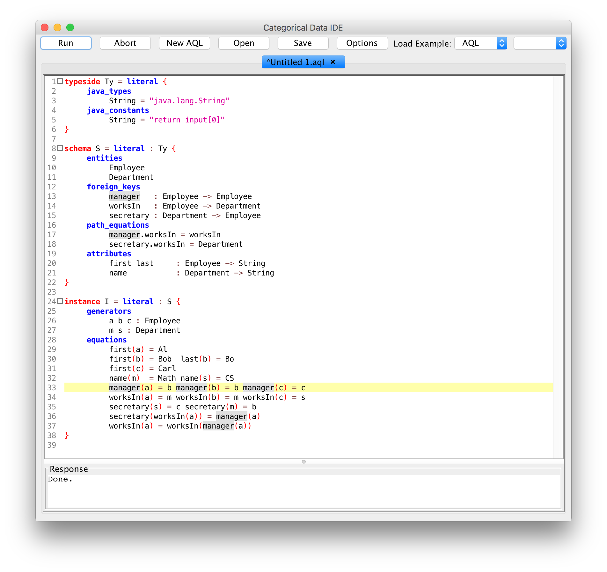

Categorical Databases
Home |
Download |
Getting Started |
Manual |
Wiki |
Papers |
Screen Shots |
Github |
Google Group |
Conexus |
Contact
Path Equations
Many data integration tasks require constructing many tables connected by foreign keys which satisfy business rules (data integrity constraints). For example, a business rule about employees may require that every employ work in the same department as their manager. Rules such as this are expressed in CQL schemas using path equations. Every instance on a schema is guaranteed to respect its path equations, and all CQL constructions respect path equations.
This example (built in to the IDE with name Employees) defines a schema about employees and departments, with foreign keys taking each employee to the department they work in, each department to the department's secretary, and each employee to their manager. Two path equations enforce that every secretary works in the department they are the secretary for, and that every employee works in the same department as their manager.
The schema is defined as:
typeside Ty = literal {
java_types
String = "java.lang.String"
java_constants
String = "return input[0]"
}
schema S = literal : Ty {
entities
Employee
Department
foreign_keys
manager : Employee -> Employee
worksIn : Employee -> Department
secretary : Department -> Employee
path_equations
manager.worksIn = worksIn
secretary.worksIn = Department
attributes
first last : Employee -> String
name : Department -> String
}
Every instance on this schema is guaranteed to satisfy the path equations. One way to write instances is as a set of equations, with missing information inferred by CQL:
instance I = literal : S {
generators
a b c : Employee
m s : Department
equations
first(a) = Al
first(b) = Bob last(b) = Bo
first(c) = Carl
name(m) = Math name(s) = CS
manager(a) = b manager(b) = b manager(c) = c
worksIn(a) = m worksIn(b) = m worksIn(c) = s
secretary(s) = c secretary(m) = b
secretary(worksIn(a)) = manager(a)
worksIn(a) = worksIn(manager(a))
}

A screen shot of the entire development is shown below:
